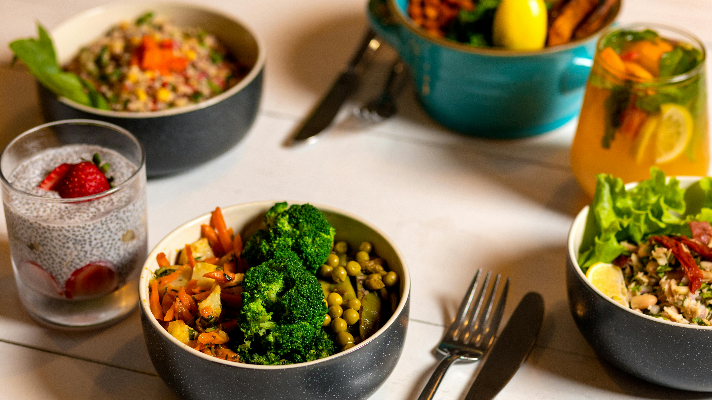

Uitgelicht gerecht

Welkom bij GreenBite
GreenBite is een milieubewust restaurant dat lokale en seizoensgebonden gerechten serveert. We werken samen met lokale boeren en leveranciers en kiezen voor duurzame verpakkingen. Bij ons proef je de smaak van versheid, kwaliteit en zorg voor de planeet.
Arrangementen van de maand
- Proefmenu (3 gangen) — Lokaal seizoensmenu, €29
- Weekend Brunch — Biologische producten, €18
- Groene Familiebox — Maaltijden voor 4, €45